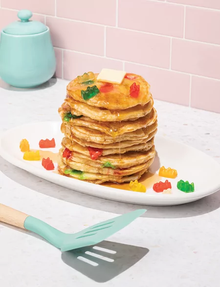

Silly Gummy Bear Pancakes

Description
If you ever played the Sims 4, you're familiar with this iconic breakfast item, the Silly Gummy Bear Pancakes.
These pancakes will have you smiling all day, but make sure you don't eat too many, or you may get hysterical!
This recipe serves 4.
Ingredients
- 2 cups baking mix
- ½ tsp. baking soda
- 1 cup buttermilk
- 2 large eggs
- 1 Tbsp. unsalted butter, melted and cooled
- 1 tsp. vanilla extract
- 2 Tbsp. vegetable oil
- 1 cup small gummy bears
- 4 Tbsp. unsalted butter, room temperature
- 1 cup pancake syrup
Steps
- Preheat oven to 80°C and place a place a metal cooling rack on a baking sheet in oven to warm up.
- In a medium bowl, whisk together baking mix and baking soda.
- In a separate medium bowl, whisk together buttermilk, eggs, melted butter and vanilla.
- Pour wet ingredients into dry ingredients and stir until well mixed and no lumps remain. Set aside.
- Heat a medium non-stick skillet over medium heat.
- Once the skillet is hot, dip a paper towel into oil and lightly coat the bottom of the pan.
- Using a lightly greased ⅓-cup measuring cup, pour 2-3 pancakes into the skillet.
- Cook for 30 seconds, then gently press 4-5 gummy bears into top of each pancake.
- Cook for 1 minute or until the pancake edges appear dry, bubbles begin to form on top, and bottom of pancake is golden brown.
- Flip pancakes and cook for another minute until the other side is golen brown and pancake springs back when gently pressed in center.
- Transfer cooked pancakes to prepared baking sheet and keep warm in oven while you repeat with remaining batter and gummy bears.
- To serve, stack two pancakes on each plate. Top each stack with 1 Tbsp. butter and ¼ cup syrup. Garnish wth remaining gummy bears. Serve immediately.